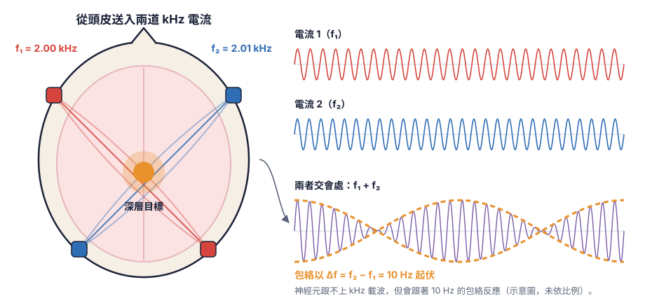

研究
精準、無線地調控大腦
神經調控技術對神經疾病治療、能夠回饋大腦的腦機介面，以及基礎神經科學與 NeuroAI 都非常重要。目前要精確控制特定區域的特定種類神經細胞，往往需要把硬體埋進腦中；現有的無線技術又難以精準控制小範圍的特定神經。我們要的是兩者兼得：最小侵入性，同時精準。
為什麼用磁場
能穿透頭骨的場
電刺激可以深入組織，但會刺激到途中的其他神經細胞，容易產生副作用。光（光遺傳學）與超音波（聲遺傳學）的強度則會隨深度遞減。磁場幾乎不受組織阻擋，可以無線地送達深層腦區。
神經細胞不會直接對磁場起反應，這讓磁場很安全，但也代表我們必須把磁場轉換成神經能感受到的形式。我們用磁性奈米粒子把磁場轉成熱、力、扭矩或電，有時再搭配以基因工程表現的受器，就能在自由活動的小鼠身上開關特定神經元。

無線深腦刺激
MagTIES
MagTIES（Magnetic-driven Torque-Induced Electrical Stimulation）是世界上第一個以「扭矩」驅動的磁電奈米刺激技術，能在毫秒等級快速活化神經元，比過去的技術快 100 到 1000 倍，也是目前唯一能快速且有效調控深層腦區腦波頻率的無線深腦刺激技術。
- 精準：毫秒級的時間精度與微米級的空間精度，改善傳統深腦刺激與經顱磁刺激空間精度不足的問題，時間精度也優於化學遺傳學、磁熱、磁機械與過去的磁電技術。
- 低功率：在低磁場強度（50 mT）與低頻率（10 Hz）下就能達到刺激效果，對磁場的要求比經顱磁刺激、磁熱刺激與其他磁電刺激更低。
- 高效率：只需低頻磁場即可產生顯著的磁電效應。


無線深腦刺激
磁機械刺激
磁性奈米盤在微弱的交變磁場中會扭轉、推擠，在細胞膜上產生的力能打開機械敏感型離子通道。我們證明了可以透過細胞本身的 TRPC 通道進行無線神經調控，不需要轉殖基因；現在也用奈米盤選擇性地刺激深腦的星狀膠細胞。
Su et al., Commun. Biol. 2022 · Cai, Wang & Chiang, bioRxiv 2026
我們的開源磁刺激系統可以為細胞培養和自由活動的小鼠產生這些磁場，CoilDesignTool 則協助其他研究者設計自己的線圈。

非侵入式刺激
時間干涉腦刺激（TIBS）
從頭皮送入的兩道高頻電流頻率太高，神經元跟不上；兩者在深腦交會的地方會以頻率差產生拍頻，只有那裡的神經元會反應。我們研究拍頻如何改變興奮與抑制的平衡，並自行開發具斜坡參數設定的電流刺激器，讓 TIBS 更安全、更有效。

NeuroAI
神經形態運算（Neuromorphic computing）
要把迴路刺激好，就得先知道它怎麼運算。我們依照真實連接體的接線建構脈衝神經網路，並進行大規模訓練。PHCSSM 在完全平行化的遞迴中保留了側向與回饋連結、短期可塑性、Dale 定律等生物限制，可以用來分析時間序列資料（例如 EEG）、建構脈衝語言模型，也能訓練依真實資料重建的腦神經迴路，例如 BeatTheFly：一個依果蠅蕈狀體接線的網路和你下棋。
2026 年我們在 THOR × NeuroBench Challenge 獲得 Track 2（運算效率）冠軍，以只有 672 位元組的模型達到 69.7% 準確率；Track 1（準確率）也僅差冠軍 0.5 個百分點。


專業領域
腦科技跨領域研究
- 神經科學
- 神經性疾病
- 奈米科技
- 電機工程
- 電磁學
- 軟體工程
- 遺傳工程
- 分子生物學
- 細胞生物學
- 動物行為學
- 立體定位開顱手術
- 鈣離子攝影
- 光纖光度學
- 神經電生理學
- 深度學習
- 影像分析